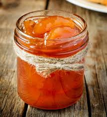

Conservas de guayaba
Introduccion
Mi abuela materna no espera que llegue diciembre para preparar esta dulce preparación, que suele verse más en la época navideña. Mi abuela corta la lechosa y la deja al sol unas horas antes de prepararla, luego comienza un proceso largo de cocción que termina en dulces y delgadas rebanadas de lechosa suave y cristalizada que se guardan en un envase de vidrio, cuando llega la hora del postre, hay visita en casa, llega la merienda o solo alguien tiene antojos de dulce, entonces mi abuela sirve en bellos platos su dulce preparación.
Cosas
- 1 lechosa de dos kilos y medio mas o menos
- 3 litros de agua
- 1/2 cucharada de bicarbonato
- 12 tazas de papelón rallado de la panela clara
- 5 tazas de azúcar
- 8 clavos de especia
- 3 1/2 litros de agua
Preparacion
Pelar y cortar la lechosa en lonjitas de 1/2 centímetro de espeso más o menos. Puedes tenderla al sol de la mañana durante unas horas antes de cocinarla.
Colocar en una olla, llevar a un hervor. Cocinar tapado durante cinco minutos, retirar del fuego pasar por un colador de pasta. Bañar con agua bien fría directamente del grifo.
Colocar en la olla el papelón, el azúcar, los clavos y el agua para hacer el almíbar. Dejarlo cocinar en la olla destapada durante 15 minutos.
Pasar la lechosa a otra olla grande y colocar sobre ella el colador de pasta. Poner dentro un liencillo. Pasar a través de él el almíbar y dejarlo caer en la olla que contiene la lechosa. Ahora poner la olla en el fuego y cocínala durante aproximadamente una hora y media. Sabrás que el almíbar está a punto cuando las gotas caigan lentamente de una cuchara de madera, formando un hilito.
Retira la olla del fuego, deja enfriar y mételo en la nevera. Tapa la dulcera con papel de plástico.